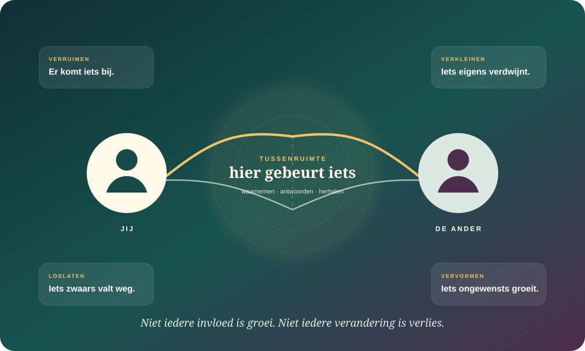

De kern in gewone taal
Sommige mensen veranderen wat je denkt dat je kunt worden.
Je brengt een geschiedenis, temperament en eigen wil mee. Toch ontstaat een deel van wie je bent in wisselwerking: in wat iemand in jou opmerkt, welk gedrag die persoon oproept, welke mogelijkheden jullie delen en wat zich vaak genoeg herhaalt. De ander schrijft jou niet. Maar niemand schrijft zichzelf helemaal alleen.
Je kunt bij verschillende mensen andere echte kanten van jezelf ervaren. Dat maakt geen van die versies automatisch vals.
Een relatie kan je verruimen of helpen loslaten, maar ook verkleinen of ongewenste kanten versterken.
Groei werkt anders wanneer iemand jouw doelen ondersteunt dan wanneer die persoon zijn ideale versie op jou projecteert.
Jij komt een relatie binnen. Maar wat er gebeurt, zit niet alleen in jou.
Relatiewetenschap bestudeert geen twee afgesloten individuen die af en toe informatie uitwisselen. Wat jij doet verandert waarop de ander antwoordt, dat antwoord verandert jouw volgende stap, en zo kan een terugkerend patroon ontstaan. Die beïnvloeding is wederzijds, maar niet noodzakelijk gelijk: afhankelijkheid, geld, status, gezondheid, leeftijd en maatschappelijke positie bepalen mee wie meer ruimte heeft om de situatie te sturen.
Een tijdelijke toestand
Iemand maakt je rustiger, scherper, speelser of juist waakzamer. Dat hoeft nog geen blijvende verandering te zijn.
Een relationele versie
Door herhaling kan één manier van praten, voelen of beschermen specifiek binnen deze relatie herkenbaar worden.
Een breder patroon
Sommige veranderingen verspreiden zich naar andere relaties, vaardigheden en je zelfverhaal. Dat kost meestal tijd en voldoende herhaling.
Grote longitudinale datasets vinden wel transacties tussen persoonlijkheid en relatiegebeurtenissen, maar duurzame socialisatie-effecten zijn gemiddeld eerder zeldzaam dan vanzelfsprekend. Wie je kiest hangt vaak sterker samen met wie je al bent dan dat één gebeurtenis je brede trekken herschrijft.
Een relatie kan iets toevoegen én iets wegnemen — ten goede of ten kwade.
Mattingly, Lewandowski en McIntyre combineren twee vragen: komt er iets bij of verdwijnt er iets, en ervaar jij dat als gewenst of ongewenst? Zo ontstaan vier richtingen. Het zijn geen relatietypes en ze kunnen tegelijk voorkomen.

Verruimen
Je ontdekt kennis, moed, plezier, mensen, vaardigheden of mogelijkheden die werkelijk bij jou kunnen gaan horen.
“Bij jou durf ik een kant van mezelf te oefenen die al op mij wachtte.”Loslaten
Je vermindert een gewoonte, zelfafwijzing of beperking die je zelf niet langer wilt dragen.
“Ik hoef mezelf hier niet voortdurend kleiner te praten.”Verkleinen
Vriendschappen, interesses, stem, ambitie of spontaniteit krijgen steeds minder ruimte.
“Ik herken hoeveel van mij stil is geworden.”Vervormen
Je neemt gedrag, overtuigingen of een zelfbeeld over dat je zelf niet wilt — soms onder druk, vernedering of voortdurende aanpassing.
“Ik word iemand die ik buiten deze relatie niet wil zijn.”De beste beeldhouwer maakt niet zijn beeld van jou.
Het Michelangelo-model stelt dat een nabije ander jouw beweging richting een eigen ideaal zelf kan bevorderen: door mogelijkheden in jou te herkennen en gedrag uit te lokken dat bij jouw waarden en doelen past. Onderzoek koppelt zulke partnerbevestiging aan beweging richting het ideale zelf en aan relationeel welzijn.
“Welke versie van jezelf wil jíj voeden?”
De ander neemt jouw waarden en aspiraties serieus, laat ruimte voor tegenspraak en ondersteunt gedrag dat jij zelf wilt ontwikkelen.
“Ik weet beter wie jij zou moeten worden.”
De ander projecteert een eigen ideaal op jou. Dat kan als hulp klinken, terwijl jouw autonomie, tempo of eigen richting verdwijnt.
Liefde die groei ondersteunt zegt niet: “word zoals ik.” Ze helpt je onderzoeken: “word ik hier meer degene die ik zelf wil zijn?”
Belangrijke beperking: het Michelangelo-onderzoek is invloedrijk maar smaller dan een natuurwet. Veel studies steunen op romantische koppels en zelfrapportage. Het model toont een mogelijk relationeel proces, niet dat iedere partner jouw verborgen essentie kan zien.
Waarom precies deze persoon?
Wanneer een relatie later pijnlijk wordt, klinkt het verleidelijk om te zeggen dat je “onbewust hetzelfde trauma hebt uitgekozen”. Dat verhaal kan soms betekenis geven, maar het is te sluitend. Aantrekking ontstaat uit veel processen tegelijk: beschikbaarheid, wederzijdse interesse, lichamelijke aantrekking, timing, gedeelde omgeving, waarden, kansen, idealisering en toeval. Een overzicht van Eastwick en Joel benadrukt hoe moeilijk het nog altijd is om voor één individu betrouwbaar te voorspellen wie onweerstaanbaar zal voelen.
De wetenschap ondersteunt verschillende kleine en middelgrote processen. Ze ondersteunt geen universele regel waarin je onderbewuste feilloos de persoon zoekt die jouw oude wond zal naspelen.
Wij lijken soms al op elkaar
Partners blijken gemiddeld op veel kenmerken meer op elkaar te lijken dan willekeurige paren. Dat kan voortkomen uit voorkeur, maar ook uit dezelfde school, buurt, cultuur, religie, kansen of sociale klasse.
Bekendheid kan wrijving verminderen. Ze zegt nog niets over veiligheid.Jij ziet mij zoals ik mezelf zie
Mensen zoeken niet alleen bewondering; begrepen en voorspelbaar gezien worden kan eveneens belangrijk voelen. Bij een hard zelfbeeld kan bevestiging daarvan vertrouwd lijken, ook wanneer ze het zelfbeeld helpt voortbestaan.
Dat betekent niet dat iemand slecht behandeld wíl worden.Jouw bescherming past in de mijne
In een zoek-terugtrekcyclus kan meer aandringen samengaan met meer afstand, waarna die afstand weer extra aandringen oproept. Beide gedragingen worden elkaars context en bevestigen de voorspellingen van beide personen.
Een cyclus verklaart interactie; ze verdeelt geen gelijke schuld.Misschien probeer ik iets ouds alsnog te laten eindigen
Psychodynamische modellen spreken over herhalingsdwang, overdracht of het opnieuw zoeken van een vertrouwd conflict. Dat kan een scherpe interpretatie zijn, maar is geen rechtstreeks gemeten universeel selectiemechanisme.
Gebruik dit als vraag, nooit als onthulde waarheid.De spiegel draait ook naar de andere kant.
Je kiest niet alleen iemand die iets in jou oproept. Jouw manier van zorgen, idealiseren, redden, pleasen, controleren of verdwijnen kan voor de ander eveneens een bepaalde versie makkelijker maken. Dat is geen gedachtenlezen en geen reden om jezelf verantwoordelijk te maken voor diens gedrag. Het is een hypothese over wat er tussen jullie wordt beloond, vermeden of uitgesteld.
Overfunctioneren kan zorgzaam zijn én onbedoeld ruimte maken voor onderfunctioneren.
De zoeker bewaakt het contact; de terugtrekker bewaakt de afstand. Beiden kunnen hun eigen kwetsbare stap uitstellen.
Idealisering kan verhinderen dat een gewoon, onzeker of verantwoordelijk mens zichtbaar wordt.
Geen grens tonen maakt grensoverschrijding nooit gerechtvaardigd, maar kan wel verhullen welke wederkerigheid ontbreekt.
De donkere vraag is niet alleen: “waarom zoek ik jou?” Ook: “welke versie van jou hoeft naast mij niet te veranderen?”
Geen gedeelde verantwoordelijkheid voor geweld: mishandeling, dwang en vernedering zijn geen “dans” waarin beide personen een gelijk aandeel hebben. Een relationeel patroon mag nooit worden gebruikt om de verantwoordelijkheid van degene die geweld of controle pleegt te verdunnen.
Nabijheid kan je zelf groter maken zonder dat jij verdwijnt.
Zelfexpansietheorie onderzoekt hoe mensen via relaties toegang krijgen tot nieuwe perspectieven, kennis, activiteiten, sociale werelden en mogelijkheden. Gedeelde nieuwe of uitdagende activiteiten hangen in experimenten en dagboekstudies samen met meer nabijheid en relatiekwaliteit. Maar “nieuw” is niet automatisch “goed”, en de langetermijnwerking is minder goed uitgezocht dan de populaire versie soms doet vermoeden.
De ander opent een deur
Je ontmoet een idee, plek, vaardigheid of gemeenschap die eerder buiten je horizon lag.
Jij probeert
Er ontstaat geen groei door nabijheid alleen. Je oefent, kiest, faalt, herhaalt en geeft zelf betekenis.
Je integreert
Wat via iemand kwam, wordt pas van jou wanneer het ook buiten diens aanwezigheid kan blijven bestaan.
Relationele plasticiteit betekent dat anderen werkelijk verschil kunnen maken. Autonomie betekent dat jij niet ophoudt medeauteur te zijn.
We voelen niet alleen naast elkaar. We veranderen elkaars gevoelsruimte.
Een recent overzicht van Arican-Dinc en Gable brengt sociale steun, samen omgaan met stress en interpersoonlijke emotieregulatie bijeen. Mensen kunnen elkaars emoties verbeteren of verslechteren, bewust of onbewust, om troost te zoeken maar soms ook om een doel te bereiken. Daarom is “co-regulatie” geen magische samensmelting van zenuwstelsels en ook niet altijd kalmeren.
Je ervaring wordt leesbaar
Iemand probeert te begrijpen wat er gebeurt zonder onmiddellijk te corrigeren, oplossen of overnemen.
Een andere blik wordt mogelijk
Een ander kan helpen een gebeurtenis minder bedreigend, minder persoonlijk of juist ernstiger te zien.
De taak wordt gedeeld
Praktische hulp, aanwezigheid en gezamenlijke planning kunnen de feitelijke belasting veranderen.
Niet iedere wisselwerking helpt
Paniek kan overslaan, samen piekeren kan vastzetten en “steun” kan afhankelijkheid, woede of vermijding voeden.
Context beslist mee: dezelfde geruststelling kan vandaag helpen en morgen ontwijken in stand houden. Effectieve regulatie hangt af van emotie, doel, timing, machtsverhouding en wat de situatie werkelijk vraagt.
Een goede relatie kan een lanceerplatform zijn.
Een preregistreerde multilevel meta-analyse van 195 effecten uit 36 steekproeven vond een gemiddelde samenhang tussen partnersteun en doeluitkomsten. Responsiviteit en praktische hulp hingen samen met vooruitgang; negatieve of controlerende steun kon hinderen. De meeste gegevens zijn correlationeel en veel meetinstrumenten waren beperkt, dus “mijn partner gelooft in mij” bewijst geen oorzaak.
Welk doel bedoel jij eigenlijk?
Geen steun zonder nieuwsgierigheid naar betekenis, twijfel en wat succes voor de ander zelf betekent.
Jouw richting blijft van jou
Perspectief nemen en keuzevrijheid ondersteunen hangen anders samen met doelvooruitgang dan duwen en besturen.
Verwijder een echte hindernis
Tijd vrijmaken, zorg overnemen, oefenen of informatie zoeken kan meer veranderen dan een motiverende slogan.
Groei heeft ook getuigen nodig
Actief en constructief reageren wanneer iemand iets goeds deelt kan positieve ervaring en intimiteit versterken.
“Wij veranderen elkaar” kan verbergen dat één persoon vooral moet verdwijnen.
Relationele modellen worden gevaarlijk wanneer wederzijdse beïnvloeding als excuus wordt gebruikt voor controle. Wie financieel afhankelijk is, gediscrimineerd wordt, voor kinderen zorgt, ziek is of vreest voor geweld heeft niet dezelfde onderhandelingsruimte. Zelfverlies is dan geen interessant groeiproces maar mogelijk een veiligheidsvraag.
Contacten, interesses, werk, taal of bewegingsvrijheid worden stelselmatig kleiner.
Grenzen leiden tot dreiging, stiltebehandeling, vernedering, financiële druk of angst.
Alleen verandering die de ander geruststelt, dient of bewondert wordt “gezond” genoemd.
Wederkerigheid wordt taal, maar reparatie, zorg en aanpassing blijven structureel jouw taak.
Je mag betrokken zijn zonder verantwoordelijk te worden voor iemands volledige regulatie, herstel, identiteit of levensrichting.
Romantiek heeft geen monopolie op verandering.
Veel relatiewetenschap gebruikt romantische koppels omdat die gemakkelijk als dyade te meten zijn. Maar vrienden, gekozen familie, collega’s, leraren, communities en hulpverleners kunnen eveneens gedrag oproepen, doelen dragen en nieuwe sociale werelden openen. Cultuur bepaalt bovendien of groei vooral als individuele ontplooiing, relationele verantwoordelijkheid of bijdrage aan een gemeenschap wordt gezien.
Vrienden
Een ander publiek voor je mogelijke zelf
Vriendschappen kunnen kanten dragen die in familie- of partnerrelaties weinig ruimte krijgen.
Gemeenschap
Verandering heeft infrastructuur nodig
Een individu kan moeilijk “groeien” wanneer tijd, veiligheid, toegankelijkheid en sociale erkenning ontbreken.
Cultuur
Niet ieder ideaal zelf is individualistisch
Autonomie kan keuzevrijheid betekenen zonder los te staan van familie, traditie of wederzijdse plicht.
Digitale relaties
Ook online worden versies opgeroepen
Erkenning, vergelijking, publiek en algoritmische versterking veranderen welke kanten zichtbaar en beloond worden.
Acht onderzoekslijnen die het afgesloten individu openbreken.
Eli Finkel & Madoka Kumashiro
Welke kant brengt een nabije ander in jou naar voren?
Bouwen verder op het Michelangelo-fenomeen: bevestiging kan beweging richting het eigen ideale zelf ondersteunen.
Brent Mattingly, Gary Lewandowski & Kevin McIntyre
Word je groter, lichter, kleiner of vreemder voor jezelf?
Ontwikkelden het model met vier richtingen van relationele zelfverandering.
Lydia Emery, Erin Hughes & Amy Muise
Hoe wordt een nieuwe wereld werkelijk deel van jou?
Herbekijken zelfexpansie, meetproblemen, integratie en open vragen over verandering op lange termijn.
Brooke Feeney & Nancy Collins
Kan een relatie tegelijk toevlucht én lanceerplatform zijn?
Beschrijven hoe responsieve steun kan helpen bij tegenslag én het aangrijpen van groeikansen.
Laura Vowels en collega’s
Welke steun helpt doelen vooruit?
Bundelden onderzoek naar responsieve, praktische en negatieve partnersteun in een methodologisch kritische meta-analyse.
Emre Selcuk & Gül Günaydın
Wat doet het wanneer iemand jou langdurig begrijpt?
Volgden partnerresponsiviteit en eudaimonisch welzijn over tien jaar, met belangrijke observationele beperkingen.
Beyzanur Arican-Dinc & Shelly Gable
Hoe bewegen emoties werkelijk tussen twee mensen?
Verbinden affectwetenschap en relatiewetenschap in een actueel raamwerk voor dyadische emotieregulatie.
Janina Bühler en collega’s
Verandert een relatiegebeurtenis brede persoonlijkheid?
Grote longitudinale datasets temperen het verhaal: selectie-effecten zijn vaker sterker dan duurzame socialisatie.
Vraag niet alleen hoe iemand jou laat voelen. Vraag wie er bij die persoon geoefend wordt.
- 1Kies drie relaties.
Bijvoorbeeld een vriend, familielid en partner of collega. Kies alleen relaties die veilig genoeg zijn om te onderzoeken.
- 2Maak per persoon één zin af.
“In de buurt van jou word ik vaker…” Noteer concreet gedrag, niet een etiket.
- 3Geef de richting aan.
Wordt iets verruimd, losgelaten, verkleind of ongewenst toegevoegd? Meerdere antwoorden mogen naast elkaar bestaan.
- 4Zoek het mechanisme tussen jullie.
Welke woorden, verwachtingen, gewoontes, stiltes, kansen of machtsverschillen roepen die versie op?
- 5Draai de spiegel voorzichtig om.
“Welke versie van de ander maak mijn gedrag makkelijker?” Schrijf dit als mogelijkheid, niet alsof je diens binnenwereld kent.
- 6Test eigenaarschap.
“Wil ík deze verandering ook wanneer deze persoon er niet bij is?” Dat onderscheidt invloed van overname.
- 7Kies één kleine tegenbeweging.
Voed een gewenste kant ook elders, of geef iets eigens opnieuw tien minuten ruimte. Geen confrontatie wanneer die onveilig kan zijn.
“Welke mensen helpen mij niet om iemand anders te worden, maar om meer mogelijkheden van mezelf te bewonen?”
Wanneer reflectie te klein wordt
Invloed stopt waar dwang begint.
Geweld, stalking, bedreiging, vernedering, seksuele of financiële controle en gedwongen isolatie vragen veiligheid en passende hulp — geen gezamenlijk groeiexperiment. Ook wanneer je nauwelijks nog weet wat jij zelf denkt, voortdurende angst ervaart of niet veilig kunt vertrekken, is gespecialiseerde ondersteuning passender. Dit dossier stelt geen diagnose en vervangt geen hulp.
Waarop dit dossier steunt.
- Veldsynthese · 2017Finkel, Simpson & Eastwick — The Psychology of Close Relationships
Veertien kernprincipes over interdependentie, responsiviteit, context en relatieprocessen.
- Michelangelo · 2009Rusbult, Kumashiro, Kubacka & Finkel — The part of me that you bring out
Vier studies naar partnerbevestiging, ideale-zelfbeweging en relationeel welzijn.
- Levensloop · 2019Bühler et al. — Does Michelangelo care about age?
Onderzoek naar het Michelangelo-proces in een leeftijdsdiverse steekproef.
- Zelfverandering · 2014Mattingly, Lewandowski & McIntyre — You make me a better/worse person
Het tweedimensionale model van verruiming, loslaten, verkleining en vervorming.
- Longitudinaal · 2015McIntyre, Mattingly & Lewandowski — When “we” changes “me”
Relationeel opgewekte zelfverandering en latere relatie-uitkomsten.
- Actueel overzicht · 2025Emery, Hughes & Muise — Self-Expansion Theory
Huidig bewijs, meetproblemen, integratie en nog onbeantwoorde langetermijnvragen.
- Geactualiseerd overzicht · 2022Aron et al. — Self-expansion motivation and inclusion of others in self
Ontwikkeling en empirische stand van het zelfexpansiemodel.
- Meta-analyse · 2022Vowels et al. — Partner Support and Goal Outcomes
195 effecten uit 36 steekproeven, met methodologische kritiek op metingen en causaliteit.
- Theoretische synthese · 2015Feeney & Collins — Thriving through relationships
Steun bij tegenslag en responsieve steun voor exploratie en groeikansen.
- Longitudinaal · 2016Selcuk et al. — Partner responsiveness and well-being
Partnerresponsiviteit en eudaimonisch welzijn over tien jaar bij ruim tweeduizend gehuwde volwassenen.
- Dyadische regulatie · 2026Arican-Dinc & Gable — Dyadic Emotion Regulation
Actueel raamwerk met affectverbeterende én affectverslechterende processen tussen mensen.
- Positieve gebeurtenissen · 2004Gable et al. — What do you do when things go right?
Vier studies naar goed nieuws delen en actief-constructieve antwoorden.
- Doelsteun · 2012Koestner et al. — Autonomous and directive goal support
Drie studies die autonomie-ondersteunende en meer sturende hulp onderscheiden.
- Persoonlijkheid · 2022Bühler, Mund, Neyer & Wrzus — Personality–relationship transactions
Drie nationaal representatieve longitudinale datasets: socialisatie-effecten bleken gemiddeld zeldzaam.
- Aantrekking · 2025Eastwick & Joel — How Do People Feel About Mates?
Actueel overzicht van aantrekking, partnerevaluatie, positieve vertekeningen en de grenzen van individuele voorspelling.
- Partnergelijkenis · 2023Sjaarda & Kutalik — Partner choice, confounding and trait convergence
Onderzoek bij 51.664 koppels dat keuze, gedeelde context en convergentie uit elkaar probeert te halen.
- Zelfverificatie · 2009Swann, Chang-Schneider & Angulo — Self-verification 360°
De lichte en donkere kanten van herkenbaar gezien worden, inclusief de mogelijke bestendiging van negatieve zelfbeelden.
- Dyadisch conflict · 2024Seedall — Attachment and demand/withdraw patterns
Actueel dyadisch onderzoek naar hoe zoeken en terugtrekken binnen conflict met elkaar samenhangen.
Lees ook ons bronnenbeleid en het redactionele kompas van de Atlas.